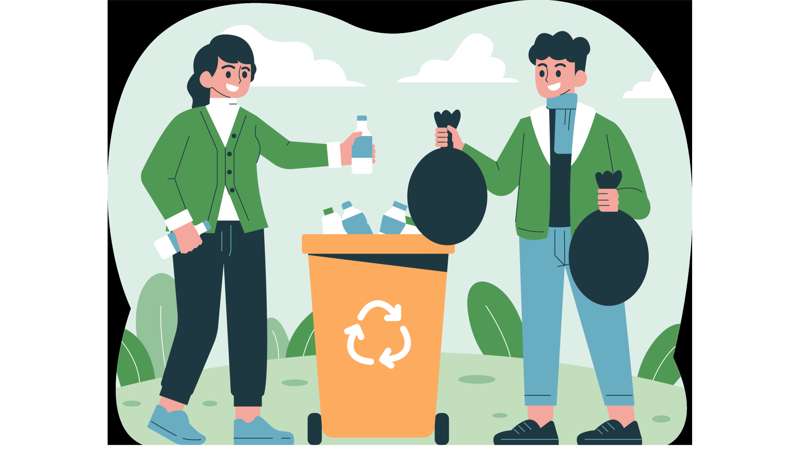

Efectos de la contaminación del agua
La contaminación del agua tiene graves efectos para la salud humana, el medio ambiente y la economía.
Educación pública
La educación pública es una herramienta fundamental para abordar la contaminación del agua. Podemos proteger nuestros recursos hídricos para las generaciones futuras al educar a las personas sobre el problema y cómo pueden ayudar a resolverlo.

Imagen de Canva